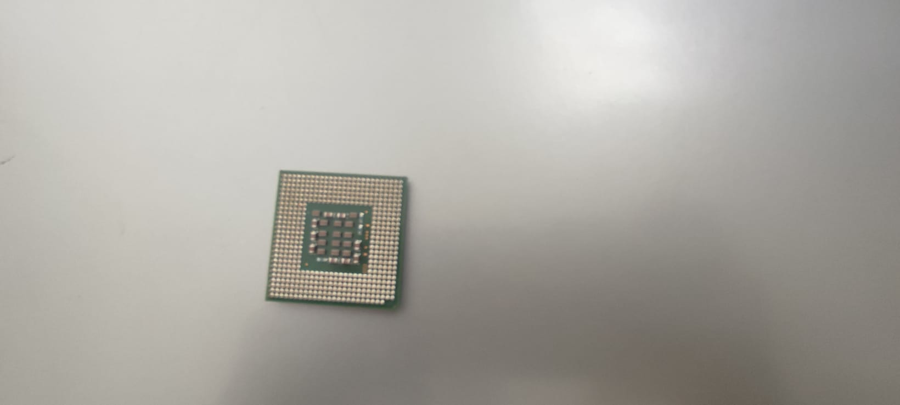
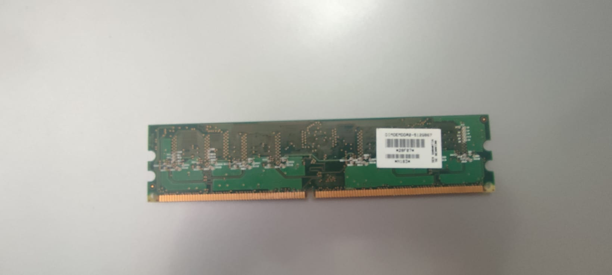
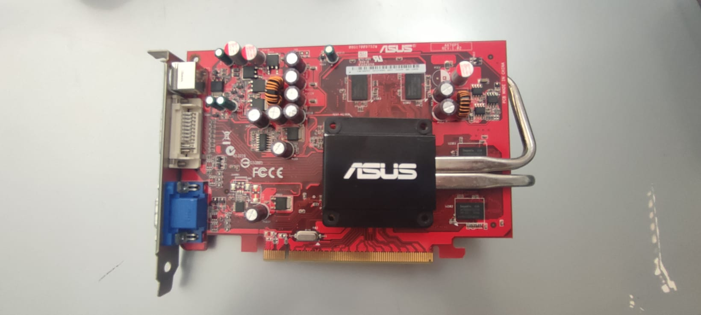
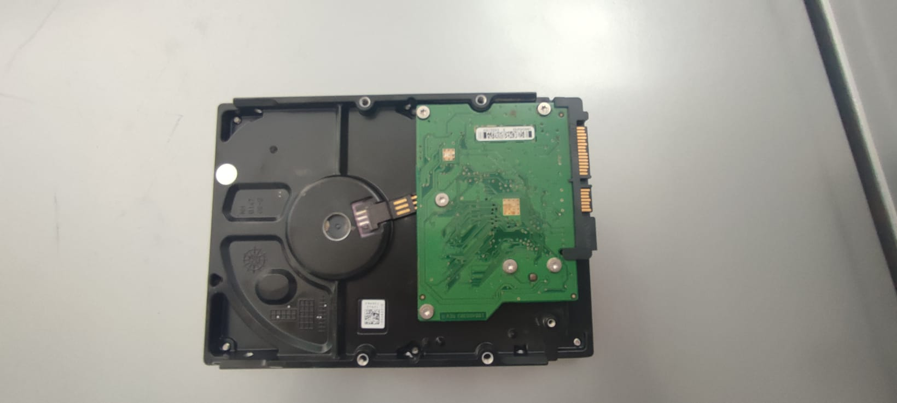
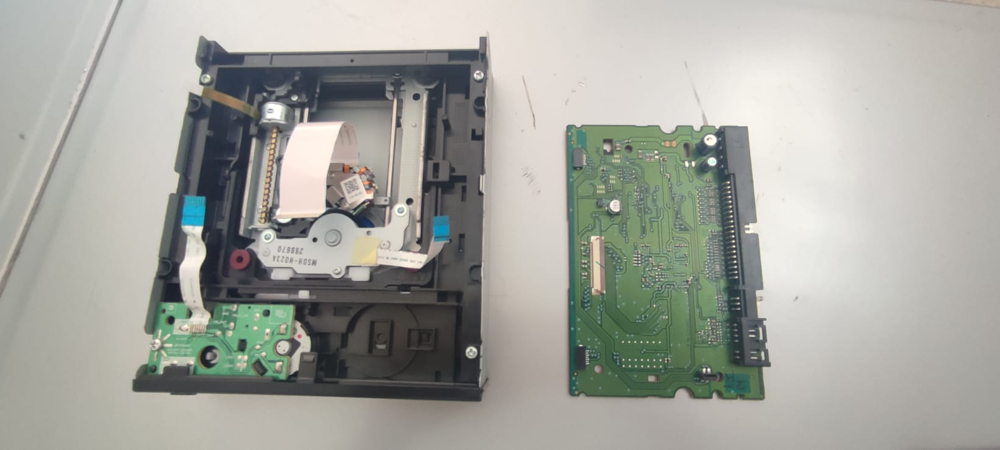
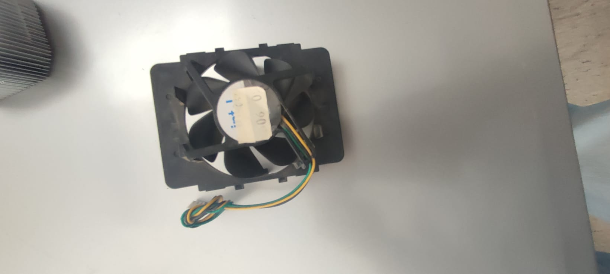

Se o CPU é o cérebro de um computador, a placa mãe é o esqueleto. A placa mãe é responsável por organizar a distribuição dos cálculos para o CPU, conectando todos os outros componentes externos e internos ao processador. Ela também é responsável por enviar os resultados dos cálculos para seus devidos destinos. Uma placa mãe pode ser onboard, ou seja, com componentes como placas de som e placas de vídeo fazendo parte da própria placa mãe, ou off board, com todos os componentes sendo conectados a ela. Para possibilitar a comunicação entre as partes de um computador, uma placa mãe utiliza diversas tecnologias de transferência de dados, tais como o padrão IDE, SATA, USB, Firewire, etc. Tais tecnologias de comunicação são disponibilizadas através de portas na placa mãe, e são usados cabos com a tecnologia apropriada para conectar as partes.
Unidade central de processamento

A Unidade de Processamento Central (CPU) é o cérebro de um computador. É a base sobre a qual é construída a estrutura de um computador. Uma CPU funciona, basicamente, como uma calculadora. Os programas enviam cálculos para o CPU, que tem um sistema próprio de “fila” para fazer os cálculos mais importantes primeiro, e separar também os cálculos entre os núcleos de um computador. O resultado desses cálculos é traduzido em uma ação concreta, como por exemplo, aplicar uma edição em uma imagem, escrever um texto e as letras aparecerem no monitor do PC, etc. A velocidade de um processador está relacionada à velocidade com que a CPU é capaz de fazer os cálculos. Quanto mais rápida a CPU, mais rápidos serão os cálculos, e mais resultados você terá ao mesmo tempo. Já o número de núcleos de um computador está relacionado a quantidade de cálculos que podem ser realizados simultaneamente. Quanto mais núcleos, geralmente, mais eficiente serão efetuados os cálculos pela CPU, pois eles serão divididos entre os diferentes núcleos para se ter resultados mais rapidamente, sem necessariamente ter um processador mais rápido.
Memória

Lembra que falamos sobre a fila de processos para serem calculados no processador? Basicamente, a memória é onde os membros dessa fila aguardarão por sua vez nos cálculos da CPU. De quebra, a memória RAM ainda funciona como uma “fila expressa” para os dados armazenados nos discos de armazenamento. Como? Os discos de armazenamento transferem informações de arquivos e programas para a memória RAM. Como o processador consegue acessar mais rápido a memória RAM do que as informações gravadas nos discos de armazenamento, a CPU pode fazer cálculos mais rapidamente, pois a fila roda mais rápido do que se acessasse os discos de armazenamento diretamente.
Fonte de Alimentação
A fonte é o sistema digestivo e o metabolismo de um computador. É responsável por fornecer energia às partes que compõe um computador, de forma eficiente e protegendo as peças de surtos de energia. Uma boa fonte também é responsável por regularizar a tensão elétrica e a corrente elétrica de uma rede (respectivamente conhecidas elos leigos como voltagem e amperagem).
Placas de vídeo

Permitem que os resultados numéricos dos cálculos de um processador sejam traduzidos em imagens e gráficos para aparecer em um monitor. A CPU envia para a placa de vídeo os cálculos referentes a imagens e vídeos, desafogando o processamento de dados pela CPU, e tornando os cálculos mais eficientes. Pense da seguinte forma: é melhor pedir para um especialista fazer um trabalho ou pedir para alguém que sabe um pouco de tudo fazê-lo? Enviar os dados de vídeo para uma placa de vídeo processar é a mesma coisa que pedir a um especialista para fazer o trabalho para o generalista (no caso, o CPU).
Disco Rígido

É o local onde se instala o Sistema Operacional ( Windows, Linux ), e onde armazenamos nossos arquivos ( word, Excel, pastas, fotos, vídeos, etc.). Nele se cria uma memória virtual quando necessário. Pode também ser chamado de Winchester.
Unidade de CD/ DVD

Estamos falando tanto de discos de armazenamento móveis, como CDs, DVDs, e Blu-Rays, quanto os discos de armazenamento usados em um computador. Independente da tecnologia de armazenamento, o propósito de um disco é guardar informações, cálculos, programas, aplicativos, músicas, vídeos, etc. Discos de armazenamento removíveis, tais como CDs, DVDs, Blu-Rays, tem uma velocidade mais lenta para leitura e gravação dos dados. Isso significa que o computador demora mais tempo para acessar as informações dessas mídias, ou gravar novas informações nelas. Um disco de armazenamento interno tem uma velocidade de acesso mais rápida, dado que está diretamente ligado aos componentes físicos de um computador. É onde o sistema operacional e os programas ficam instalados para uso pelo computador. Um pen drive funciona como um disco removível, sendo mais lento no trabalho de leitura.
Coolers e ventoinhas do computador

Quando cada parte de um computador realiza uma tarefa, elas usam eletricidade. Essa eletricidade usada tem como uma consequência a geração de calor, que deve ser dissipado para que o computador continue funcionando sem problemas e sem engasgos no desempenho. Os coolers e ventoinhas são responsáveis por promover uma circulação de ar dentro da case do CPU. Essa circulação de ar provoca uma troca de temperatura entre o processador e o ar que ali está passando ou, por exemplo, o líquido de um water cooler (mas mesmo water cooler precisa de ar para se resfriar, através do radiador). Essa troca de temperatura provoca o resfriamento dos componentes do computador, mantendo seu funcionamento intacto e prolongando a vida útil das peças, já que a temperatura também é responsável por degradar o desempenho com o tempo. Com o acúmulo de poeira, ventoinhas e coolers tem mais dificuldade para resfriar um computador e por isso, precisam ser limpos com uma certa frequência.